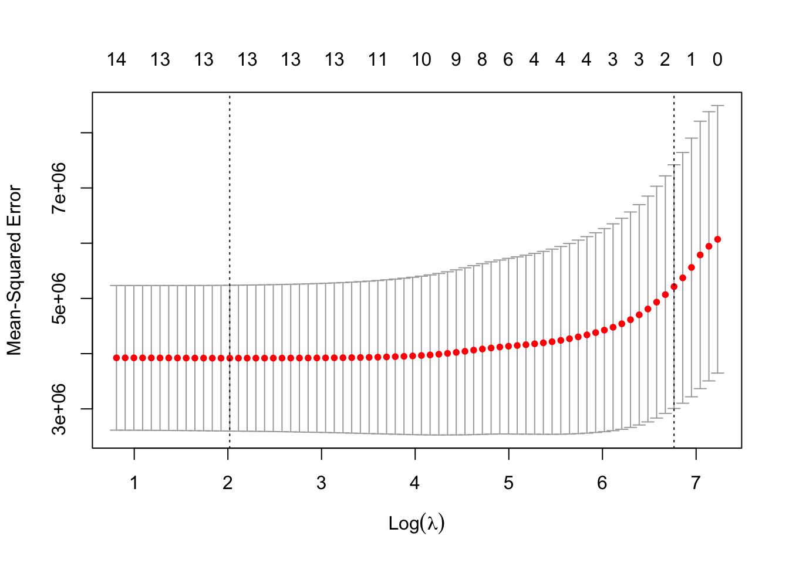
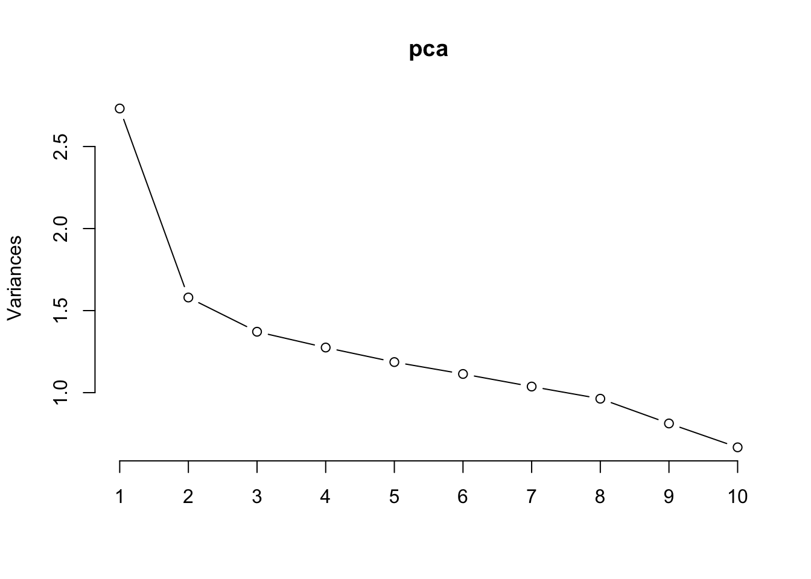
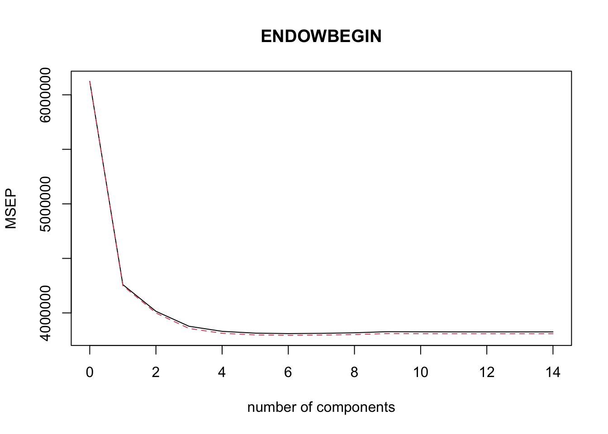
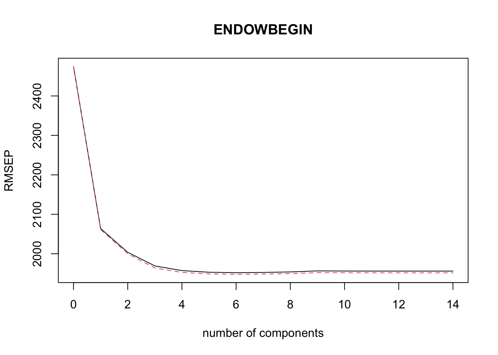
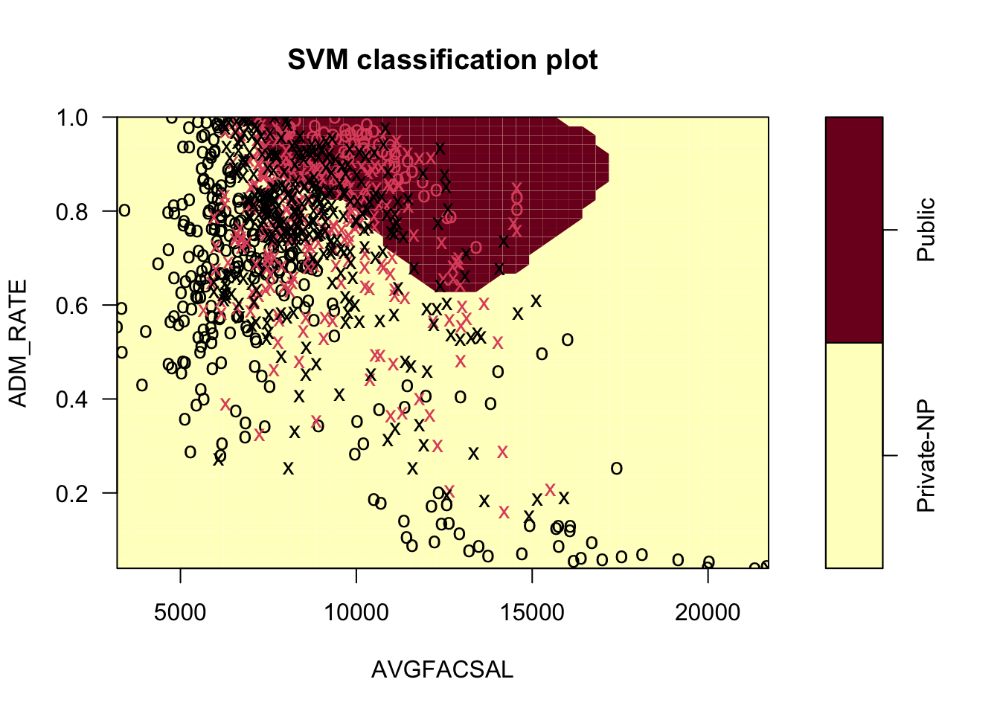

library(tidyverse)
college <- read_csv("https://raw.githubusercontent.com/AU-datascience/data/main/427-627/college_scorecard_extract_sep_2023.csv")
college <- na.omit(college)
college$ENDOWBEGIN <- college$ENDOWBEGIN/1000000
#college <- read_csv("./data/college_scorecard_extract_sep_2023.csv")
#glimpse(college) STAT-427/627 Final 24S
Name: _______________________________ Course: _____________
Be brief but show your reasoning (partial credit?). Label your work and answers for each problem if on a different page. Put your name on each piece of paper. You can use your notes, textbook, calculator, and computer and the internet to access course materials.
Recommend you do the problem one plots on paper instead of taking the time to code. Turn in the paper and as an option, you con take a picture and put the file in the same folder as your code file. Use the following rmarkdown syntax at the appropriate location to embed the file into your output.
 .
.Each problem is 20 points. Total points = 40. Time = 2 hr 30 min.
1 Insurance Predictions: Do by hand.
An insurance company wants to predict if a new customer will have a major operation within 10 years. They select 11 customers at random as training data to predict an operation based on the customer’s age and their average annual cost of medical care.
| Person | A | B | C | D | E | F | G | H | I | J | K |
|---|---|---|---|---|---|---|---|---|---|---|---|
| Age | 20 | 22 | 23 | 24 | 25 | 26 | 27 | 29 | 32 | 35 | 37 |
| Average Cost | 5 | 11 | 8 | 9 | 15 | 19 | 24 | 21 | 18 | 20 | 17 |
| Had an Operation | N | Y | N | N | N | Y | Y | N | N | Y | Y |
To classify future insured, the company partitions its predictor space (Age, Cost) as on the right (see hard copy).
(a) Plot the persons using their label on the partition plot.
- Draw a classification tree that corresponds to this partition.
- At each internal node, state the splitting condition and threshold.
- At each terminal (leaf) node, state the predicted response.
(b) Fill in the following table with the prediction for each point based on your tree.
- Fill out the confusion matrix.
- Calculate the training classification rate from the confusion matrix.
| Person | A | B | C | D | E | F | G | H | I | J | K |
|---|---|---|---|---|---|---|---|---|---|---|---|
| Age | 20 | 22 | 23 | 24 | 25 | 26 | 27 | 29 | 32 | 35 | 37 |
| Average Cost | 5 | 11 | 8 | 9 | 15 | 19 | 24 | 21 | 18 | 20 | 17 |
| Had an Operation | N | Y | N | N | N | Y | Y | N | N | Y | Y |
| Prediction? |
| Pred Yes | Pred No | |
| Actual-Yes | ||
| Actual-No |
- Classification Rate?
(c) A random forest is constructed for the same data. It has 3 trees and each is pruned to 1 split with 2 terminal nodes:
- The 1st tree sample is persons A, C, C, D, E, E, F, F, F, G, I. It splits on Cost.
- The 2nd tree sample is persons A, C, D, D, E, F, F, G, G, H, K. It splits on Age.
- The 3rd tree sample is persons A, A, D, D, E, E, F, G, J, K, K. It splits on Cost.
The following table summarizes the data for the forest.
| Person | A | B | C | D | E | F | G | H | I | J | K |
|---|---|---|---|---|---|---|---|---|---|---|---|
| Age | 20 | 22 | 23 | 24 | 25 | 26 | 27 | 29 | 32 | 35 | 37 |
| Average Cost | 5 | 11 | 8 | 9 | 15 | 19 | 24 | 21 | 18 | 20 | 17 |
| Had an Operation | N | Y | N | N | N | Y | Y | N | N | Y | Y |
| Tree 1 | 1 | 2 | 1 | 2 | 3 | 1 | 1 | ||||
| Tree 2 | 1 | 1 | 2 | 1 | 2 | 2 | 1 | 1 | |||
| Tree 3 | 2 | 2 | 2 | 1 | 1 | 1 | 2 |
- In the following plots, put a number next to each point for how many times it is in the tree and line through the Out-Of-Bag points
- For each tree, draw a single partition for the given variable at the threshold which creates the terminal nodes as pure as possible.
- Below the three plots, for each tree, indicate the number of pure nodes (if any) for each tree and your calculation of the threshold value based on the closest points on either side of the threshold. You do not need to calculate the Gini impurity index.
- For each tree, plot a New customer with age 26 with an average cost of 18.
- Use this random forest to predict whether the New customer will have an operation and explain your reasoning for the prediction.
Number of pure nodes, Threshold, and Prediction for each tree?
The 1st tree:
The 2nd tree:
The 3rd tree:
Overall Prediction for the new Customer and Rationale:
(d) (STAT-627 only) Calculate the prediction error rate of the random forest in question (c), using out-of-bag (OOB) data.
- Using your thresholds from part (c), fill in the following table with the predictions for only the OOB persons in each tree.
- Calculate the overall OOB prediction for each OOB person.
- Indicate if each overall OOB prediction is an error or not (1, 0).
- Calculate the prediction error rate.
- What would you recommend to improve the prediction error rate?
| Person | A | B | C | D | E | F | G | H | I | J | K |
|---|---|---|---|---|---|---|---|---|---|---|---|
| Tree 1 | |||||||||||
| Tree 2 | |||||||||||
| Tree 3 | |||||||||||
| —————— | — | — | — | — | — | — | — | – | — | — | — |
| Predicted | |||||||||||
| Had an Operation | N | Y | N | N | N | Y | Y | N | N | Y | Y |
| Error? |
(e) Is there a maximal margin classifier for this dataset? Explain your answer. Consider drawing some lines on the scatterplot you created in (a).
(f) Consider the following plot from an SVM classifier. (see hard copy)
- How many support vectors are there?
- What type of kernel is being used based on the plot and why?
- What is the training classification rate?
2 College Scorecard Data
The US Department of Education collects data from every “college” level institution in America and makes a lot of data available under the College Scorecard.
- This question uses a curated extract of the college scorecard data. The variable names and definitions are at the end.
- This dataset has 23 variables of data on 1,695 four-year colleges.
- This dataset is on Canvas or at “https://raw.githubusercontent.com/AU-datascience/data/main/427-627/college_scorecard_extract_sep_2023.csv”.
We want to predict the Endowment of a new colleges given the other variables as potential predictors.
In the following steps, build models to predict the College Endowment (ENDOWBEGIN) and use \(K=10\)-fold cross-validation to tune and evaluate predictive performance with set.seed(123) as appropriate.
For each problem, describe your approach, your R code, the most important results, and your interpretation of the results.
You may write your responses on this document by hand after running code in R and/or submit a file on Canvas with your approach, code, results, and interpretation of results.
2.1 Multiple Linear Regression Regularization
- Load the data and assign the name
collegeto it. Get rid of any records withNAs and dividedENDOWBEGINby 1 million to reduce the scale. Glimpsecollege.
- Fit a multiple linear regression of Endowment (\(ENDOWBEGIN\)) on all the other variables as a full model.
full_model <- lm(ENDOWBEGIN ~ ., data = college)- How many predictors appear important with a \(p\) value less than 0.1?
summary(full_model)
Call:
lm(formula = ENDOWBEGIN ~ ., data = college)
Residuals:
Min 1Q Median 3Q Max
-8188.4 -539.3 34.9 550.2 24097.4
Coefficients:
Estimate Std. Error t value Pr(>|t|)
(Intercept) 2.026e+03 3.178e+03 0.638 0.52391
ADM_RATE -1.061e+03 3.767e+02 -2.817 0.00495 **
AGE_ENTRY -7.333e+01 3.757e+01 -1.952 0.05126 .
AVGFACSAL 4.364e-01 5.233e-02 8.340 2.82e-16 ***
CONTROLPublic -1.116e+03 2.583e+02 -4.321 1.73e-05 ***
COSTT4_A -1.598e-02 8.728e-03 -1.831 0.06748 .
FEMALE -2.365e+02 7.230e+02 -0.327 0.74369
FIRST_GEN 3.077e+03 1.237e+03 2.488 0.01304 *
GRAD_DEBT_MDN -4.500e-02 2.169e-02 -2.075 0.03828 *
LOCALERural 3.976e+02 3.162e+02 1.257 0.20891
LOCALESurbuban -6.201e+01 1.474e+02 -0.421 0.67402
LOCALETown 1.868e+02 1.613e+02 1.158 0.24714
MD_EARN_WNE_P10 -1.483e-01 1.314e-02 -11.286 < 2e-16 ***
MN_EARN_WNE_P10 1.849e-01 1.294e-02 14.284 < 2e-16 ***
PCIP14 -1.033e+03 8.105e+02 -1.274 0.20294
PCIP27 2.016e+04 4.720e+03 4.272 2.15e-05 ***
PFTFAC 3.843e+01 2.756e+02 0.139 0.88912
PCT_ASIAN -7.123e+01 5.362e+01 -1.329 0.18435
PCT_BLACK -2.858e+00 2.909e+01 -0.098 0.92177
PCT_WHITE -1.642e+00 2.798e+01 -0.059 0.95321
PCT_HISPANIC -2.789e+01 1.228e+01 -2.271 0.02338 *
PCTPELL 5.174e+02 7.835e+02 0.660 0.50917
REGIONGreat Lakes -4.843e+02 3.646e+02 -1.328 0.18441
REGIONMid-East -8.869e+02 3.457e+02 -2.566 0.01046 *
REGIONNew England -8.037e+02 3.856e+02 -2.084 0.03742 *
REGIONOutlying Regions -9.732e+02 1.748e+03 -0.557 0.57791
REGIONPLains -4.136e+02 3.708e+02 -1.115 0.26501
REGIONRocky Mountains -5.710e+02 4.615e+02 -1.237 0.21634
REGIONSoutheast -6.046e+02 3.867e+02 -1.563 0.11832
REGIONSouthwest -5.571e+02 3.730e+02 -1.493 0.13568
SAT_AVG -2.030e+00 1.172e+00 -1.732 0.08362 .
UGDS 1.666e-02 1.002e-02 1.663 0.09672 .
---
Signif. codes: 0 '***' 0.001 '**' 0.01 '*' 0.05 '.' 0.1 ' ' 1
Residual standard error: 1690 on 887 degrees of freedom
Multiple R-squared: 0.5486, Adjusted R-squared: 0.5328
F-statistic: 34.77 on 31 and 887 DF, p-value: < 2.2e-16there are 6 predictors with atleast 2 stars so their p-values are less than 0.01.
- Which of those increase the endowment? AVGFACSAL, MN_EARN_WNE_P10, and PCIP27
Do any of the variables have a high generalized variance inflation factor GVIF? If any, which ones and do they make sense as having high GVIF given the other variables?
library(car)Loading required package: carData
Attaching package: 'car'The following object is masked from 'package:dplyr':
recodeThe following object is masked from 'package:purrr':
somevif_values <- vif(full_model)
vif_values GVIF Df GVIF^(1/(2*Df))
ADM_RATE 1.956409 1 1.398717
AGE_ENTRY 2.362937 1 1.537185
AVGFACSAL 5.856266 1 2.419972
CONTROL 5.087335 1 2.255512
COSTT4_A 7.482394 1 2.735396
FEMALE 1.812391 1 1.346251
FIRST_GEN 4.281285 1 2.069127
GRAD_DEBT_MDN 1.957953 1 1.399269
LOCALE 1.663459 3 1.088517
MD_EARN_WNE_P10 11.123241 1 3.335152
MN_EARN_WNE_P10 11.799559 1 3.435049
PCIP14 1.990121 1 1.410716
PCIP27 1.642977 1 1.281787
PFTFAC 1.208391 1 1.099268
PCT_ASIAN 7.129318 1 2.670078
PCT_BLACK 32.073927 1 5.663385
PCT_WHITE 36.596033 1 6.049465
PCT_HISPANIC 3.223241 1 1.795339
PCTPELL 3.383407 1 1.839404
REGION 11.251857 8 1.163326
SAT_AVG 7.508675 1 2.740196
UGDS 2.070544 1 1.438939using 5 as my GVIF threshold, it appears the following variables may be subject to multicollinearity: AVGFACSAL, CONTROL, COSTT4_A, MD_EARN_WNE_P10, MN_EARN_WNE_P10, PCT_BLACK, PCT_ASIAN, PCT_WHITE, REGION, SAT_AVG
Refit a reduced model without MN_EARN_WNE_P10 and PCT_WHITE. Are there any changes in significant variables?
reduced_model <- lm(ENDOWBEGIN ~ . - MN_EARN_WNE_P10 - PCT_WHITE, data = college)
summary(reduced_model)
Call:
lm(formula = ENDOWBEGIN ~ . - MN_EARN_WNE_P10 - PCT_WHITE, data = college)
Residuals:
Min 1Q Median 3Q Max
-5325.4 -636.7 -2.7 536.4 29884.2
Coefficients:
Estimate Std. Error t value Pr(>|t|)
(Intercept) 6.267e+02 2.130e+03 0.294 0.768639
ADM_RATE -1.542e+03 4.154e+02 -3.712 0.000219 ***
AGE_ENTRY -2.647e+01 4.141e+01 -0.639 0.522903
AVGFACSAL 6.863e-01 5.451e-02 12.592 < 2e-16 ***
CONTROLPublic -1.388e+03 2.849e+02 -4.871 1.31e-06 ***
COSTT4_A -1.170e-02 9.621e-03 -1.216 0.224122
FEMALE -1.262e+03 7.966e+02 -1.584 0.113640
FIRST_GEN 4.448e+03 1.366e+03 3.256 0.001173 **
GRAD_DEBT_MDN -8.266e-02 2.382e-02 -3.470 0.000545 ***
LOCALERural 1.595e+02 3.497e+02 0.456 0.648466
LOCALESurbuban -2.191e+02 1.628e+02 -1.346 0.178639
LOCALETown 1.859e+02 1.778e+02 1.046 0.296020
MD_EARN_WNE_P10 -2.391e-03 9.089e-03 -0.263 0.792580
PCIP14 -2.056e+03 8.931e+02 -2.302 0.021564 *
PCIP27 2.310e+04 5.223e+03 4.423 1.09e-05 ***
PFTFAC -6.161e+01 3.047e+02 -0.202 0.839820
PCT_ASIAN -9.126e+01 3.291e+01 -2.773 0.005672 **
PCT_BLACK 9.374e+00 8.745e+00 1.072 0.284044
PCT_HISPANIC -3.261e+01 1.075e+01 -3.035 0.002476 **
PCTPELL -1.279e+01 8.670e+02 -0.015 0.988237
REGIONGreat Lakes -2.153e+02 3.805e+02 -0.566 0.571559
REGIONMid-East -7.678e+02 3.620e+02 -2.121 0.034201 *
REGIONNew England -8.115e+02 4.148e+02 -1.956 0.050756 .
REGIONOutlying Regions -9.512e+02 1.933e+03 -0.492 0.622754
REGIONPLains -1.270e+02 3.959e+02 -0.321 0.748422
REGIONRocky Mountains -6.060e+01 5.097e+02 -0.119 0.905381
REGIONSoutheast -2.466e+02 4.008e+02 -0.615 0.538519
REGIONSouthwest 4.711e+01 4.106e+02 0.115 0.908679
SAT_AVG -1.167e+00 1.296e+00 -0.901 0.368010
UGDS 5.020e-04 1.098e-02 0.046 0.963539
---
Signif. codes: 0 '***' 0.001 '**' 0.01 '*' 0.05 '.' 0.1 ' ' 1
Residual standard error: 1872 on 889 degrees of freedom
Multiple R-squared: 0.4447, Adjusted R-squared: 0.4266
F-statistic: 24.55 on 29 and 889 DF, p-value: < 2.2e-16now for significant variables we have PCT_HISPANIC, PCT_ASIAN, PCIP27, GRAD_DEBT_MDN, FIRST_GEN, CONTROLPublic, AVGFACSAL, ADM_RATE
- Check the GVIF again and comment on any changes.
vif(reduced_model) GVIF Df GVIF^(1/(2*Df))
ADM_RATE 1.938564 1 1.392323
AGE_ENTRY 2.339179 1 1.529438
AVGFACSAL 5.177903 1 2.275501
CONTROL 5.040528 1 2.245112
COSTT4_A 7.408387 1 2.721835
FEMALE 1.792726 1 1.338927
FIRST_GEN 4.255414 1 2.062865
GRAD_DEBT_MDN 1.924363 1 1.387214
LOCALE 1.626197 3 1.084415
MD_EARN_WNE_P10 4.338904 1 2.083004
PCIP14 1.968773 1 1.403130
PCIP27 1.639128 1 1.280284
PFTFAC 1.203818 1 1.097186
PCT_ASIAN 2.188334 1 1.479302
PCT_BLACK 2.360766 1 1.536479
PCT_HISPANIC 2.010628 1 1.417966
PCTPELL 3.375700 1 1.837308
REGION 8.191355 8 1.140472
SAT_AVG 7.483227 1 2.735549
UGDS 2.024164 1 1.422731now for variables subject to multicolinearity we have: AVGFACSAL, CONTROL, COSTT4_A, REGION, SAT_AVG.
- Create a new data frame with the variables below (you can use the following code).
- Remove the rows with
REGION = "Outlying Regions". - Convert all character variables to factors.
- Remove the rows with
college |>
dplyr::select(
ENDOWBEGIN, ADM_RATE, AVGFACSAL, CONTROL,FIRST_GEN, GRAD_DEBT_MDN, PCIP27,
PCT_ASIAN, REGION
) |>
filter(REGION != "Outlying Regions") |>
mutate(across(where(is.character), as.factor)) ->
college2- Use the {boot} package with
college2to report the prediction MSE for a full model (ENDOWBEGINon the other data) based on K-10 fold cross-validation adjusted deviance.
library(boot)
Attaching package: 'boot'The following object is masked from 'package:car':
logitset.seed(123)
lm_full <- glm(ENDOWBEGIN ~ ., data = college2)
cv_error <- cv.glm(college2, lm_full, K = 10)
cv_error$delta[1][1] 38752892.2 Regularization via Shrinkage
Use LASSO with cross validation to model ENDOWBEGIN on the other variables in college2 and find the best lambda.
- Create model matrices for
XandY. - Use
set.seed(123)for the cross validation.
library(glmnet)Loading required package: Matrix
Attaching package: 'Matrix'The following objects are masked from 'package:tidyr':
expand, pack, unpackLoaded glmnet 4.1-9set.seed(123)
x <- model.matrix(ENDOWBEGIN ~ ., college2)[, -1]
y <- college2$ENDOWBEGIN- Plot the result of the cross validation.
lasso_cv <- cv.glmnet(x, y, alpha = 1, standardize = TRUE)
plot(lasso_cv)
- Show the result and identify whether
lambda-minorlambda.1sehas fewer non-zero variables?
coef(lasso_cv, s = "lambda.min")15 x 1 sparse Matrix of class "dgCMatrix"
s0
(Intercept) -2.512681e+03
ADM_RATE -1.557644e+03
AVGFACSAL 5.584929e-01
CONTROLPublic -8.723086e+02
FIRST_GEN 4.484255e+03
GRAD_DEBT_MDN -7.331234e-02
PCIP27 2.267653e+04
PCT_ASIAN -9.547093e+01
REGIONGreat Lakes 1.052237e+02
REGIONMid-East -4.603852e+02
REGIONNew England -4.555186e+02
REGIONPLains 2.420369e+02
REGIONRocky Mountains .
REGIONSoutheast 2.121505e+02
REGIONSouthwest -6.959190e+01coef(lasso_cv, s = "lambda.1se")15 x 1 sparse Matrix of class "dgCMatrix"
s0
(Intercept) -1187.7901159
ADM_RATE .
AVGFACSAL 0.1990341
CONTROLPublic .
FIRST_GEN .
GRAD_DEBT_MDN .
PCIP27 .
PCT_ASIAN .
REGIONGreat Lakes .
REGIONMid-East .
REGIONNew England .
REGIONPLains .
REGIONRocky Mountains .
REGIONSoutheast .
REGIONSouthwest . lambda-min has fewer zero variables.
- Show the coefficients for
lambda.1seand discuss which were driven to zero if any.
coef(lasso_cv, s = "lambda.1se")15 x 1 sparse Matrix of class "dgCMatrix"
s0
(Intercept) -1187.7901159
ADM_RATE .
AVGFACSAL 0.1990341
CONTROLPublic .
FIRST_GEN .
GRAD_DEBT_MDN .
PCIP27 .
PCT_ASIAN .
REGIONGreat Lakes .
REGIONMid-East .
REGIONNew England .
REGIONPLains .
REGIONRocky Mountains .
REGIONSoutheast .
REGIONSouthwest . there pratically all were driven to zero except for AVGFACSAL.
- Do any of the +/- signs of the coefficients for the variables surprise you? using the labmda-min method, i would say a suprising result is colleges with a higher percentage of first-gen students have a higher endowement because i would expect the college to be spending the extra money on first-gen scholarships rather than the endowement.
What is the cross-validated predicted MSE from the model?
lasso_cv$cvm[lasso_cv$lambda == lasso_cv$lambda.1se][1] 52137012.3 Principal components.
Calculate the principal components using the X model matrix you created earlier, with scaling, and show the scree plot.
pca <- prcomp(x, scale. = TRUE)
summary(pca)Importance of components:
PC1 PC2 PC3 PC4 PC5 PC6 PC7
Standard deviation 1.6527 1.2569 1.17102 1.12916 1.08923 1.05543 1.01847
Proportion of Variance 0.1951 0.1128 0.09795 0.09107 0.08474 0.07957 0.07409
Cumulative Proportion 0.1951 0.3080 0.40590 0.49698 0.58172 0.66129 0.73538
PC8 PC9 PC10 PC11 PC12 PC13 PC14
Standard deviation 0.98138 0.90128 0.81662 0.74145 0.63683 0.51380 0.20775
Proportion of Variance 0.06879 0.05802 0.04763 0.03927 0.02897 0.01886 0.00308
Cumulative Proportion 0.80417 0.86219 0.90982 0.94909 0.97806 0.99692 1.00000plot(pca, type = "l")
- Interpret the scree plot
the line gradually flattens after 2 but not quite flat. i would still recomment using 2-3 PCA components.
Given the scree plot, choose to create either a PCR or a PLSR model.
I choose PSLR
library(pls)
Attaching package: 'pls'The following object is masked from 'package:stats':
loadingsset.seed(123)
plsr_model <- plsr(ENDOWBEGIN ~ ., data = college2, scale = TRUE, validation = "CV")
validationplot(plsr_model, val.type = "MSEP")
summary(plsr_model)Data: X dimension: 918 14
Y dimension: 918 1
Fit method: kernelpls
Number of components considered: 14
VALIDATION: RMSEP
Cross-validated using 10 random segments.
(Intercept) 1 comps 2 comps 3 comps 4 comps 5 comps 6 comps
CV 2475 2064 2004 1969 1957 1953 1952
adjCV 2475 2062 2000 1964 1953 1949 1948
7 comps 8 comps 9 comps 10 comps 11 comps 12 comps 13 comps
CV 1953 1954 1957 1956 1956 1956 1956
adjCV 1949 1950 1952 1952 1952 1952 1952
14 comps
CV 1956
adjCV 1952
TRAINING: % variance explained
1 comps 2 comps 3 comps 4 comps 5 comps 6 comps 7 comps
X 19.01 27.26 32.67 40.05 46.87 54.21 58.84
ENDOWBEGIN 33.44 38.76 41.93 42.47 42.53 42.54 42.54
8 comps 9 comps 10 comps 11 comps 12 comps 13 comps 14 comps
X 65.66 67.32 74.32 81.10 87.63 93.12 100.00
ENDOWBEGIN 42.54 42.54 42.54 42.54 42.54 42.54 42.54it takes 13 components to explain 90% of variation in the x variables. it takes 3 components to explain 40% of components in the y variables.
Create the model with scaling and K=10 fold cross-validation. (Use seed 123).
How many principal components are
- Needed to explain 90% of the total variation among X-variables?
- Needed to explain 40% of the total variation of the response,
ENDOWBEGIN? - What is the optimal number of PCs based on adjusted Cross-Validation RMSEP?
- What is the adjusted Cross Validation MSEP for the optimal number of PCs
- Show the validation plot.
validationplot(plsr_model, val.type = "RMSEP")
optimal number of CVs are around 3-4
2.4 Summary
Create a summary table showing the method, the MSE, and the number of predictors.
- Recommend a model for predicting
ENDOWBEGINfor new observations and explain your choice.
| Method | Predicted MSE | Number of Predictors |
|---|---|---|
| Linear Model (Reduced) | ||
| LASSO lambda.1se | ||
| PCR | ||
| PLSR |
library(tibble)
library(boot)
library(glmnet)
library(pls)
# 1. Reduced Linear Model (lm_full assumed to be fitted on college2)
set.seed(123)
cv_lm <- cv.glm(college2, lm_full, K = 10)
mse_lm <- cv_lm$delta[1]
num_lm <- length(coef(lm_full)) - 1 # exclude intercept
# 2. LASSO (lambda.1se from lasso_cv)
mse_lasso <- lasso_cv$cvm[lasso_cv$lambda == lasso_cv$lambda.1se]
coef_lasso <- coef(lasso_cv, s = "lambda.1se")
num_lasso <- sum(coef_lasso != 0) - 1 # exclude intercept
# 3. PLSR (from plsr_model)
rmsep_plsr <- RMSEP(plsr_model, estimate = "adjCV")
mse_plsr <- min(rmsep_plsr$val[1,1,-1]) # remove Comp 0
num_plsr <- which.min(rmsep_plsr$val[1,1,-1])
# Combine into a summary tibble
model_summary <- tibble(
Method = c("Linear Model (Reduced)",
"LASSO (lambda.1se)",
"PLSR"),
Predicted_MSE = c(mse_lm, mse_lasso, mse_plsr),
Num_Predictors = c(num_lm, num_lasso, num_plsr)
)
# Print table
model_summary# A tibble: 3 × 3
Method Predicted_MSE Num_Predictors
<chr> <dbl> <dbl>
1 Linear Model (Reduced) 3875289. 14
2 LASSO (lambda.1se) 5213701. 1
3 PLSR 1948. 62.5 Classification with SVM (Optional Extra Credit 4 points)
We now want to predict whether a new college is Private or Public based on the data in college2.
Tune a Support Vector Machine model to find the best cost and kernel.
- Use the range of costs in
seq(4.0, 6.0, 0.25)and the linear and radial kernels.
What is the best cost value and the best kernel and the cross-validated error rate?
Create a model with the best parameters
- How many support vectors are there?
Plot the results looking at ADM_RATE and AVGFACSAL.
- Comment on the plot
library(e1071)
rm(svm)Warning in rm(svm): object 'svm' not found# Tune separately for linear and radial kernels
set.seed(123)
svm_linear <- tune(
svm, CONTROL ~ ADM_RATE + AVGFACSAL,
data = college2,
kernel = "linear",
ranges = list(cost = seq(4.0, 6.0, 0.25))
)
set.seed(123)
svm_radial <- tune(
svm, CONTROL ~ ADM_RATE + AVGFACSAL,
data = college2,
kernel = "radial",
ranges = list(cost = seq(4.0, 6.0, 0.25))
)
# Extract best cost and error for linear
best_cost_linear <- svm_linear$best.parameters$cost
best_error_linear <- svm_linear$best.performance
# Extract best cost and error for radial
best_cost_radial <- svm_radial$best.parameters$cost
best_error_radial <- svm_radial$best.performance
# Determine overall best kernel and cost
if (best_error_linear < best_error_radial) {
best_kernel <- "linear"
best_cost <- best_cost_linear
best_error <- best_error_linear
} else {
best_kernel <- "radial"
best_cost <- best_cost_radial
best_error <- best_error_radial
}
# Print results
cat("Best kernel:", best_kernel, "\n")Best kernel: radial cat("Best cost:", best_cost, "\n")Best cost: 4 cat("Cross-validated error rate:", best_error, "\n")Cross-validated error rate: 0.3225036 library(e1071)
final_svm <- svm(CONTROL ~ ADM_RATE + AVGFACSAL, data = college2,
kernel = "radial", cost = 4)final_svm
Call:
svm(formula = CONTROL ~ ADM_RATE + AVGFACSAL, data = college2, kernel = "radial",
cost = 4)
Parameters:
SVM-Type: C-classification
SVM-Kernel: radial
cost: 4
Number of Support Vectors: 617617 support vectors
plot(final_svm, data = college2[, c("ADM_RATE", "AVGFACSAL", "CONTROL")],
main = "SVM: ADM_RATE vs AVGFACSAL")